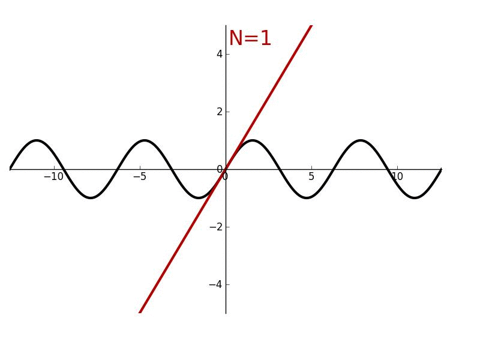

Calculus II: Futher Study of Motion and Change
Course: Math 5B — CRN 30719, Spring 2019
Time & Place: TuTh 4-6:30 (R Bulding, Room 109)
Instructor: Jorge Basilio (gbasilio@pasadena.edu)
Office: MSC R-406
Office Hours:
| Lab | Files | Due Date |
|---|
| 1 |
-
Sage Worksheet of Lab_0 (here)
-
Sage Worksheet of Lab_0 as HTML (here)
-
Sage Worksheet of Lab_0 as PDF (here)
-
Sage Worksheet of Lab_0 Write-up template (here)
|
April 9
|
| 2 |
|
|
| 3 |
|
|
| 4 |
|
|
| 5 |
|
|
References
CoCalc Website
Book: Sage for Undergraduates
-
By Gregory Bard. Download it at his website: (here)
Sage Tutorial - Online site
-
By Mike O'Sullivan. Available at his website: (here)
SageMath Advice for Calculus
-
By Tuan A. Le and Hieu D. Nguyen. Available: (here)